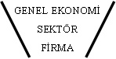
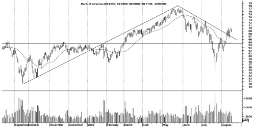

YORUM
… ile güne sıkıntılı başlayan piyasalarda açılışla birlikte satış baskısının hâkim olması bekleniyor. İMKB-100 endeksi için aşağı doğru açılışta ilk destek … seviyesinde. Endeksin bu seviyede tutunamaması durumunda alttaki destekler, sırasıyla … ve … seviyesinde.
Vay vay vay! Televizyondaki abla nasıl da biliyor endeksin ne yapacağını. Piyasanın açılıştan sonraki yönünden çok emin, hatta düşüşün nereye kadar olacağını, en kötü nereye kadar gevşeyebileceğini nasıl da biliyor? E, belli tabii, okumuş abla. Yorum yapıyor.
Peki yorum yapacak kadar işi biliyorsa neden bana bunları televizyonda anlatmak için maaş alacağına, kendi parasıyla söylediklerini uygulayarak servetine servet katmıyor? Neyse, biz işimize bakalım. Durumu bir de biz yorumlayalım.
ANALİZ
Analiz, Fransızca kökenli bir kelime. “Çözümleme, tahlil etme” anlamlarına geliyor. Elbette bizim gözümüzle bakıldığında tahlil esnasında bir miktar sezgi gerekli, ancak yine de esas olan bilimsel bilgi. Analiz yaparken bu bilgi ve sezgi uygun oranlarda karıştırılmalı ve kısık ateşte... (pardon kitaplar karıştı).
İşte bilimsel bilginin ve sezginin hangi oranda karıştırılacağı ve nihayetinde hangi piyasa için hangi yöntemin uygulanacağı da bu işin sanatı. Biz de bu sanatı tanımlamaya çalışacağız.
Öncelikle, finansal piyasaları analiz ederken çeşitli yöntemler kullanmak mümkün. Önemli olan sonuca ulaşmak. Doğru sonuca ulaşıldığı sürece, yöntemin tartışıldığı pek görülmemiştir. Ama bir de yanlış sonuca ulaşılırsa... İşte o zaman yandı, hem analiz hem de analist!
Analiz yöntemleri, tümüyle yüksek matematiğe dayalı istatistik modellerden, sokaktaki adamı gözlemlemeye dayalı basit ve dolaysız yöntemlere dek değişik formlarda karşımıza çıkabiliyor. Elbette bu modellerin bir bölümü kolayca her duruma uygulanabilirken, bazıları ise ciddi ön koşullar içeriyor ve her durumda kullanılamıyor. Bu aynı zamanda, herkes, her modeli kuramaz ve anlayamaz anlamına da geliyor ne yazık ki. İşin diğer bir boyutu da her durumda mutlak başarı sağlayan bir analiz yönteminin de henüz bulunamamış olması. (Bu da baştaki ablanın neden piyasa yorumu yaptığı, ama kendi parasına bunu uygulamadığını bir noktaya dek açıklıyor.)
ERİŞİLEBİLİR VERİ, KOLAY YORUM
Az önce de belirttiğimiz üzere, finansal piyasaları analiz etmek üzere pek çok yöntem düşünülmüştür. Ayrıca henüz düşünülmemiş pek çok başka yöntemin de kurgulanabileceği açıktır. Ancak, yine az önce belirttiğimiz üzere, bu yöntemlerin bir kısmı fazlasıyla karışık ve matematik, istatistik içereceğinden ve/veya analiz esnasında pek çok detayda güncel veri gerektirebileceğinden böylesi bir kitapta incelenmeleri mantıklı olmayacaktır.
O hâlde amacımız ne? Amacımız, matematik ve istatistik ile uğraşmadan ve çeşitli verileri arama zahmetine katlanmadan, en kolay şekilde analizleri yapabilmek. Bu durumda, çok rahat erişilebilecek, hatta biz aramasak bile bizi bulacak veriler üzerinden, geniş bir ekonomi bilgisine de sahip olmadan (olanları da gördük) analiz yapabilmek istiyoruz.
Peki bu mümkün mü? Enflasyon verisini düşünün. Her ayın belli bir gününde açıklanır ve siz onu aramasanız bile ertesi sabah gazetelerin ilk sayfasında, klasik olarak bir canavar karikatürü (enflasyon canavarı) eşliğinde rakamlar yayımlanır. Siz onları aramazsınız, onlar sizi bulur: “Enflasyon canavarı yeniden hortladı: TÜFE = % 0.9, ÜFE = % 1.3”. Peki bir de bu kolay bulunan verilerin ekine basit kurallar koysak, mesela desek ki:
ÜFE (Üretici Fiyatları Endeksi) > TÜFE (Tüketici Fiyatları Endeksi) olduğuna göre, sistemde maliyet enflasyonu vardır. O hâlde faizlerde … beklemeliyiz. Buna göre de döviz kurunda … beklenmeli.
Nasıl ama? İşte böylesine kolay erişilebilir verileri, böyle kolayca yorumlayabilsek ne güzel olur, değil mi?
ANALİZ YÖNTEMLERİ
Bu açıklamalardan sonra, erişilebilir veriler üzerine uygulanabilir kolay analiz yöntemlerini saptama zamanı geldi.
Kitapta finansal piyasalardaki hareketleri analiz etmek ve bu yolla geleceği tahmin etmek amacıyla kullanacağımız analiz yöntemleri şunlar olacak:
Banka Bilançosu Analizi ve Bankaların Olası Davranışları
Bankalar, finans piyasalarının “esas oğlanları”dır. Bankaların mevcut durumları ve buna göre yapacakları finansal piyasalara bağlı olmakla birlikte, yaptıklarıyla piyasaları derinden etkileyebilirler de. Bu diyalektik bir olgudur. Bankalar, finansal piyasalardan hem etkilenir, hem de onları etkiler.
O hâlde, işin bu tarafından değerlendirildiğinde, bankaların mali tablolarına bakılarak mevcut durumları ve beklentileri saptanabilir ise bu durumda hem profesyonellerin piyasadan ne bekledikleri hem de ne yapmayı planladıkları anlaşılabilecektir.
Diğer taraftan ise, finansal piyasalardaki gelişmelerin bankalar üzerindeki pozitif ya da negatif yönlü etkileri kestirilebilir ve böylece bankaların nasıl tepki verecekleri öngörülmeye çalışılabilir. Bankalar döviz, bono ya da başka bir kıymeti alacak ya da satacak ise, onlarla birlikte –mümkünse onlardan önce– hareket etmekte yarar olacaktır.
Temel Analiz
Adından da anlaşılacağı üzere temel analiz, piyasaları incelemeye en temelden başlar. Bu anlamda, “Ekonomiye Bulaşmak: Makroekonomik Göstergeler ve Yorumlanması” başlıklı bölüme bir nevi hazırlıktır.
Temel analiz, üç aşamalı olarak yapılmaktadır:
• Genel ekonomi analizi
• Sektör analizi
• Firma analizi

Temel analizde aşamalar aynı sırayla izlenecek ve genel ekonomiden firma analizine doğru giderken bazen kolay bulunur veri kaynaklarından, bazen de basit gözlem sonuçlarından yararlanılacaktır.
Teknik Analiz
Bölümün başındaki TV yorumunu yeniden hatırlayalım:
… ile güne sıkıntılı başlayan piyasalarda açılış ile birlikte satış baskısının hâkim olması bekleniyor. İMKB-100 endeksi için aşağı doğru açılışta ilk destek … seviyesinde. Endeksin bu seviyede tutunamaması durumunda alttaki destekler, sırasıyla … ve … seviyesinde.
Neymiş efendim? Endeks aşağıya doğru düşecekmiş, düşünce de belli bir fiyatta duracakmış. Yok eğer orada durmazsa daha aşağıda başka bir fiyat seviyesinde duracakmış. Otobüs mü ki bu efendim, duracağı yeri önceden biliyoruz?
Nereden biliyoruz?
Grafiklerden biliyoruz. Fiyat grafiklerini inceliyoruz. Fiyat grafiklerini incelediğimiz endeksin –ya da başka bir kıymetin– geçmişte ne gibi bir hareket yaptığını analiz edip yine benzer bir hareket sergileyeceğini varsayıyoruz.

O hâlde, eğer tarihin tekerrürden ibaret olduğuna inananlardansanız ya da öyle olduğuna inananların nasıl davranacaklarını merak edenlerdenseniz, grafikleri okuma sanatına ihtiyacınız olacak, yani teknik analize.
Makroekonomik Göstergeler ve Yorumlanması
Diğer analizler değişik teorilere ve geçmiş tecrübelere dayanıyor. Bu yöntemleri kullananlar da, elini sürmeyenler de var. Bu anlamda bazı analistlerin güven duymadıkları ya da teknik analiz örneğinde olduğu gibi, bilimselliği dahi tartışılan yöntemler mevcut. Ancak makroekonomik göstergeler bunlardan değil. Tahmin konusunda başarılı olmadıkları durumlarda bile itibarlarından bir şey kaybetmiyorlar. Hani, Avrupa’da otobana ters yönden giren Türk şoför gibi:
Bir otomobilin ters yönden otobana girdiğini fark eden otoban polisi, derhâl havadan ve yerden görsel ve sesli mesajlarla trafikteki araçları uyarmaya çalışır. Bu arada, radyodan da “acil” koduyla otobandaki araçlara dikkatli olmaları, otobanda ters yönde ve yüksek hızla seyahat eden bir araç olması nedeniyle yavaşlamaları uyarısında bulunulur. Aynı sesli anonsu dinleyen bizim şoför hiddetle söylenir:
– Ne bir aracı kardeşim! Hepsi ters yönden geliyor bunların, hepsi!
İşte makroekonomik göstergelerin öngördüğü gibi gelişmezse işler, göstergelere değil de piyasalara kabahat buluruz: “Bizim piyasalar bütün teorileri alt üst ediyor”. Yani o kadar güvenilirdir makroekonomik göstergeler. Adından da belli değil mi?
Ekonominin parasal ve reel kısmını hem ayrı ayrı hem de birbirleriyle ilişkileri açısından inceleyen makroekonomik göstergeler, orta ve uzun vadeli olarak kur, faiz ve hisse senedi piyasaları hakkında öngörülerde bulunmamıza yardımcı olurlar.
Bu analizi yaparken, gerçekten de tartışılmaz önemdeki ekonomik verileri dikkate alırlar: istihdam, büyüme, GSMH, dış ticaret dengesi, enflasyon, vs.
Merkez Bankası ve Piyasaların Etkileşimi
Piyasaların “esas oğlanı” olarak bankaları gösterdik. Esas oğlan başrolde olsa da, filmde, bir de ona doğru yolu gösteren, yanlış yaptığında fırça atan ve gerektiğinde kavgada destek çıkan ak saçlı, ama sağlam yapılı bir ihtiyar da olur ya, işte o Merkez Bankası’dır.
Merkez Bankası, temel görevi olan “fiyat istikrarı”nı, yani enflasyonun makul bir düzeye inerek orada kalmasını sağlamak adına piyasaya doğrudan ya da dolaylı olarak müdahale eder.
Bu müdahaleler, YTL ya da döviz piyasasına olabilir ve tüm finansal kesimi etkiler. Bu müdahalelerin sonuçları, makroekonomik göstergelerdeki değişimlerde olduğu gibi üç vakte kadar değil, derhâl gözlemlenir.
O hâlde ihtiyarın, pardon Merkez Bankası’nın ne yapacağını saptayabilmek ve yapacaklarının sonuçlarını kestirebilmek çok önemlidir. İşte bu analizde incelenecek olan da budur.
O hâlde...
Analiz terimini çözümleme ya da tahlil etme olarak açıkladık. Finansal piyasaları analiz ederken kolay ulaşılabilir verileri kullanacağımızı ve uygulanması, yorumlanması basit yöntemleri tercih edeceğimizi belirttik.
Buna göre, kitap boyunca finansal piyasaları tahmin etmede kullanacağımız analiz yöntemlerini de şöylece sıraladık:
• Banka bilançosu analizi ve bankaların olası davranışları
• Temel analiz
• Teknik analiz
• Makroekonomik göstergeler ve yorumlanması
• Merkez Bankası ve piyasaların etkileşimi